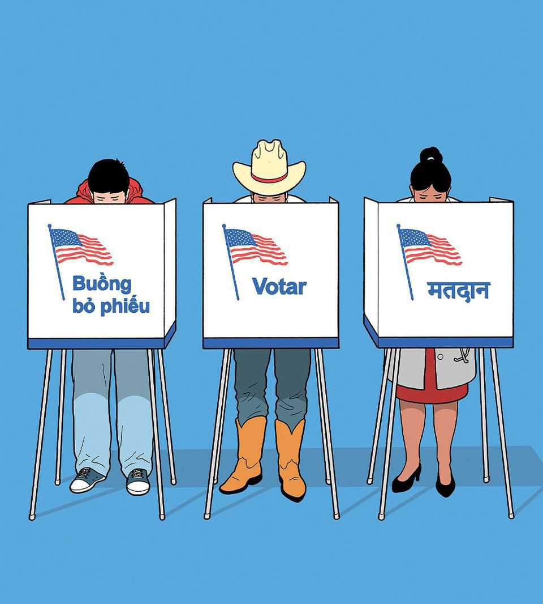

The Americans changing politics for the better
Hispanics and Asians have become their country’s most dynamic swing voters

Oct 29th 2026
MIDTERM ELECTIONS are always a referendum on the sitting American president, but rarely has an incumbent so wilfully put himself in the spotlight in defiance of his own unpopularity. As the campaign ends, Donald Trump is commandeering rallies in Republican strongholds, a sign of his party’s vulnerability and his unwavering faith in his own star power. Away from the spotlight, however, something more surprising—and more important—has been happening: Hispanics and Asians have emerged as America’s most valuable voters.
The curse of American politics is its bitter partisanship. As voters have sorted themselves along racial, educational and geographical lines, the parties have spent less time trying to win converts from the other side and more whipping their own supporters into a permanent frenzy: 70% of Republicans are hostile towards Democrats and more than 80% of Democrats return the favour. The result is a style of politics that tugs public life towards the extremes, punishes compromise and puts getting people angry above getting things done.
Hispanic and Asian-American voters offer the best hope of arresting this baleful trend. They have become America’s crucial swing voters, with an outsize impact on races across the country. Compared with other blocs, their numbers are growing faster, their ideology is more fluid and their priorities are less divisive. That means they are likely to be good for America not just in these midterms, but also for many elections to come.
The biggest force on November 3rd will be Mr Trump’s unpopularity. His national net-approval rating stands at -27 points. The president is predicting victory in “record numbers”, but our forecast model suggests Democrats have a 95% chance of winning back the House and a 54% chance of taking the Senate. Polling puts Mr Trump underwater on every policy, from inflation to immigration. His great vulnerability is that voters blame higher bills on his fondness for tariffs and his choice to go to war with Iran.
The backlash has created openings for Democrats in states such as Kansas and Iowa, where even contemplating a blue victory would once have got Republican strategists sacked. Disenchanted rural voters who chose Mr Trump in 2024 may stay at home this time, as a protest against high diesel prices and poor markets for their crops. Polls say Democrats are winning back the young and peeling off working-class whites.
It would be good for America to have more battleground states. If Democrats win in places like Kansas and Texas, the power of incumbency could make them competitive in future elections, too. No group captures the potential for opening up politics as much as Hispanics and Asian-Americans.
One reason is demography. They are a growing fraction of the population—especially Hispanics, who are three times more numerous than Asian-Americans. Since 2006 their combined share of the electorate has increased by nine percentage points, to reach 21%. They are also highly diverse. The grandchildren of an immigrant from Ho Chi Minh City have a different outlook from a new arrival from Bangalore. Neither fits neatly into the familiar Democrat-Republican template.
And they are more likely to switch their votes. In 2012 Democrats thought they had a lock on Latinos and Asians. In 2024 the story was how they were becoming Trumpian. It has now become clear that they were swing voters all along.
White voters changed little between 2020 and 2024, while both Latinos and Asians lurched hard to the right. They were then the fastest to turn against Mr Trump in early 2025. The margin of support for Democrats has risen by 17 points among Latinos and 14 among Asians since 2024, compared with ten for whites and five for black voters. They are likely to help decide House races from suburban New York to Florida as well as Senate contests in Alaska, Kansas and Texas.
Part of the explanation for this is that these voters are the epitome of striving Americans who want to work hard and get ahead. Higher prices for food and fuel hit Hispanic voters particularly hard; housing costs affected Asian voters. Latinos are more than twice as likely to start businesses as white voters. Asians are likely to spend more time in education.
Many are recent arrivals or the children of immigrants, so their opinions have not yet hardened along party lines. In contrast to the rest of the voting population, if Hispanics and Asians hold one left-leaning position, they will not necessarily endorse others. Likewise, wanting a secure southern border does not equate to support for the hardline enforcement that has frightened Hispanic employees into staying away from work.
Instead, many are moderate. They have little truck with culture wars or polarisation. The economic policies they care about diverge from the tribal messages the parties use to stir up their bases. Whereas policies on abortion and trans rights are set at the extremes, economic management is suited to the swing voter’s pragmatic preference for the common good.
Almost anything that gives the parties a reason to appeal to the centre will benefit America, especially when it involves the virtues of hard work and prosperity. Democrats will need a winning economic message and a coherent plan for immigration. Republicans should reject their ferocious deportations and the ugly ultranationalism that denigrates Hispanic and Asian citizens for not being “heritage Americans”.
All Americans should therefore welcome these new swing voters. Thanks to them, fewer elections will be decided by hard-core party members in primaries, and more by the average voter in the general election. If politicians win more credit by accomplishing something in government, they will perhaps spend less of their time demonising the other side. If the economy seems to matter more and culture wars less, America will be more prosperous and better governed. Hispanic and Asian immigrants want the chance to thrive. Their votes will help ensure America thrives with them. ■